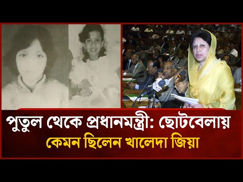
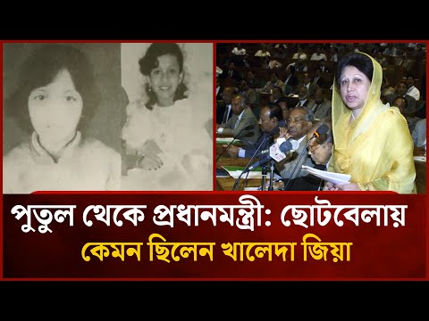
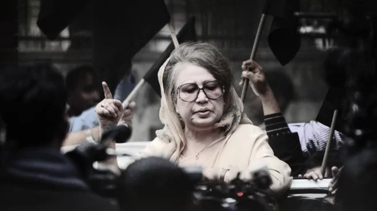
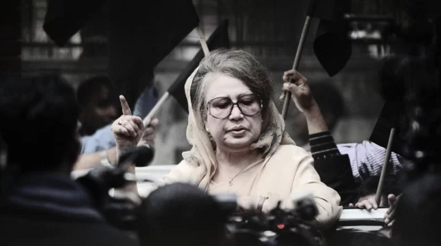
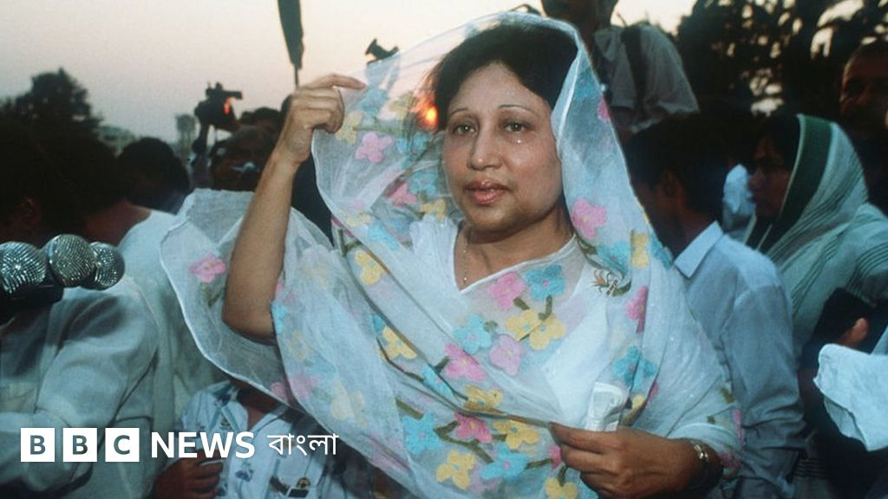
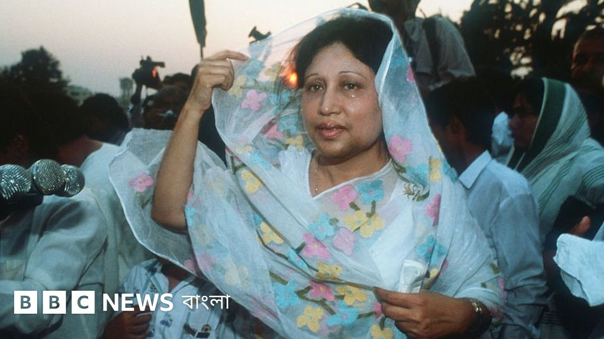

জন্ম ও শৈশব - 'পুতুল'

 

জন্ম: ১৫ আগস্ট ১৯৪৫ সালে ভারতের পশ্চিমবঙ্গের জলপাইগুড়ি জেলার দিনহাটায়। পিতা ইস্কান্দার মজুমদার এবং মাতা তৈয়বা মজুমদার। তাঁর ডাকনাম ছিল 'পুতুল'।
শিক্ষাজীবন: দিনাজপুরে শৈশব কাটে। স্থানীয় স্কুলে পড়াশোনা করেন। ছবি আঁকা, গান গাওয়া এবং সাহিত্যে আগ্রহী ছিলেন। লাজুক স্বভাবের হলেও পরিবারে তাঁর সাহসিকতার পরিচয় ছিল।
বিশেষত্ব: একটি সম্ভ্রান্ত মুসলিম পরিবারে বেড়ে ওঠা এই মেয়েটি পরবর্তীতে বাংলাদেশের প্রথম নারী প্রধানমন্ত্রী হবেন - এটি তখন কেউ কল্পনাও করেননি।
বিবাহিত জীবন ও মুক্তিযুদ্ধ
বিবাহ: মাত্র ১৫ বছর বয়সে ১৯৬০ সালে পাকিস্তান সেনাবাহিনীর অফিসার জিয়াউর রহমানের সাথে বিবাহবন্ধনে আবদ্ধ হন। এরপর শুরু হয় সেনা পরিবারের গৃহবধূ হিসেবে জীবন।
মুক্তিযুদ্ধে অবদান: ১৯৭১ সালে মুক্তিযুদ্ধের সময় স্বামী মেজর জিয়াউর রহমান স্বাধীনতা ঘোষণা করলে তিনি এবং তার দুই শিশু সন্তান (তারেক রহমান ও আরাফাত রহমান কোকো) পাকিস্তানি সেনাবাহিনীর হাতে বন্দি হন।
কঠিন সময়: প্রায় নয় মাস অমানবিক পরিস্থিতিতে বন্দি থাকার পরেও তিনি সাহস হারাননি। দেশ স্বাধীন হওয়ার পর পরিবার পুনর্মিলিত হয়।
পারিবারিক জীবন: স্বাধীনতার পর একজন সাধারণ গৃহিণী হিসেবে সন্তান লালন-পালনে ব্যস্ত থাকেন। স্বামী জিয়াউর রহমান রাষ্ট্রপতি হওয়ার পরেও রাজনীতিতে সরাসরি জড়িত ছিলেন না।
জীবনের সবচেয়ে কঠিন মুহূর্ত - রূপান্তরের শুরু
 

 

১৯৮১ সালের ৩০ মে: চট্টগ্রামের সার্কিট হাউসে রাষ্ট্রপতি জিয়াউর রহমান সামরিক ষড়যন্ত্রের শিকার হয়ে শাহাদাতবরণ করেন। একজন সাধারণ গৃহবধূ রাতারাতি বিধবা হন এবং তাঁর ওপর এসে পড়ে দলের দায়িত্ব।
দলের হাল ধরা: দুঃখ-কষ্ট সহ্য করেও তিনি ভেঙে পড়েননি। ১৯৮১ সালের ১০ মার্চ বিএনপির ভাইস চেয়ারম্যান নির্বাচিত হন এবং পরবর্তীতে দলের দায়িত্ব নেন।
প্রথম রাজনৈতিক পদক্ষেপ: রাজনীতিতে অভিজ্ঞতা না থাকলেও স্বামীর আদর্শ বাস্তবায়নের জন্য দৃঢ়প্রতিজ্ঞ হন। প্রথম জনসভায় জনগণের ব্যাপক সমর্থন পান।
চ্যালেঞ্জ মোকাবেলা: পুরুষশাসিত সমাজে একজন নারী হিসেবে রাজনীতি করা অত্যন্ত কঠিন ছিল। কিন্তু তিনি তাঁর সাহস, দৃঢ়তা এবং নিষ্ঠা দিয়ে সকল বাধা অতিক্রম করেন।
স্বৈরাচারবিরোধী আন্দোলনের মহানায়িকা
স্বৈরাচার এরশাদের উত্থান: ১৯৮২ সালে জেনারেল এরশাদ সামরিক অভ্যুত্থানের মাধ্যমে ক্ষমতা দখল করেন। বেগম খালেদা জিয়া প্রথম থেকেই এই স্বৈরশাসনের বিরুদ্ধে সোচ্চার হন।
আপসহীন নেতৃত্ব: টানা ৯ বছর নিরলস সংগ্রাম করেন। "স্বৈরাচারের অধীনে নির্বাচনে যাব না" - এই কঠিন সিদ্ধান্তে অটল থাকেন। বহুবার গ্রেফতার, হুলিয়া, এবং নির্যাতনের শিকার হন।
জনগণের নেত্রী: দেশব্যাপী ঘুরে ঘুরে জনসভা করেন। তাঁর সাহসী ভাষণ লাখো মানুষকে অনুপ্রাণিত করে। "আপসহীন নেত্রী" উপাধি পান এই সময়ে।
গণঅভ্যুত্থান ১৯৯০: ১৯৯০ সালের গণআন্দোলনে নেতৃত্ব দেন। ছাত্র-জনতার সাথে এক হয়ে রাজপথে নামেন। অবশেষে ৬ ডিসেম্বর ১৯৯০ এরশাদ পদত্যাগ করতে বাধ্য হন।
গণতন্ত্রের বিজয়: এরশাদের পতনের মধ্য দিয়ে বাংলাদেশে গণতন্ত্র পুনঃপ্রতিষ্ঠিত হয়। এই বিজয়ে তাঁর নেতৃত্ব ছিল মুখ্য ভূমিকা।
প্রথম প্রধানমন্ত্রিত্ব - ঐতিহাসিক অর্জন
ঐতিহাসিক নির্বাচন: ১৯৯১ সালের ২৭ ফেব্রুয়ারি অনুষ্ঠিত নির্বাচনে বিপুল ভোটে বিজয়ী হন। ২০ মার্চ বাংলাদেশের প্রথম নারী প্রধানমন্ত্রী হিসেবে শপথ নেন। মুসলিম বিশ্বেও তিনি প্রথম নারী সরকারপ্রধান।
সংসদীয় গণতন্ত্র প্রতিষ্ঠা: রাষ্ট্রপতি শাসিত সরকার ব্যবস্থা পরিবর্তন করে সংসদীয় পদ্ধতি চালু করেন - যা বাংলাদেশের গণতন্ত্রের জন্য মাইলফলক।
শিক্ষা সংস্কার: ষষ্ঠ শ্রেণি পর্যন্ত মেয়েদের শিক্ষা সম্পূর্ণ অবৈতনিক করেন এবং উপবৃত্তি চালু করেন। এই পদক্ষেপে লাখো নারী শিক্ষার সুযোগ পান।
অর্থনৈতিক সংস্কার: ভ্যাট (মূল্য সংযোজন কর) ব্যবস্থা চালু করে রাজস্ব আদায়ে যুগান্তকারী পরিবর্তন আনেন। বেসরকারিকরণ নীতি অব্যাহত রাখেন।
অবকাঠামো উন্নয়ন: যমুনা বহুমুখী সেতুর কাজ শুরু করেন। বিদ্যুৎ খাতে বেসরকারি বিনিয়োগ আকৃষ্ট করেন। গ্রামীণ অবকাঠামো উন্নয়নে জোর দেন।
পররাষ্ট্র নীতি: প্রতিবেশী দেশ ভারত ও পাকিস্তানসহ সকল দেশের সাথে সুসম্পর্ক বজায় রাখেন। জোট নিরপেক্ষ আন্দোলনে বাংলাদেশের ভূমিকা শক্তিশালী করেন।
নারী ক্ষমতায়ন: নিজের উদাহরণ দিয়ে প্রমাণ করেন নারীরা দক্ষভাবে দেশ পরিচালনা করতে পারেন। মন্ত্রিসভায় নারী মন্ত্রীদের অন্তর্ভুক্ত করেন।
তৃতীয় মেয়াদ - তত্ত্বাবধায়ক সরকার ব্যবস্থার প্রবর্তক


ঐতিহাসিক সংস্কার: বিরোধী দলের দাবির মুখে তত্ত্বাবধায়ক সরকার ব্যবস্থা সংবিধানে অন্তর্ভুক্ত করার জন্য সংবিধান সংশোধন করেন। এটি বাংলাদেশের গণতন্ত্রের জন্য মাইলফলক।
ক্ষমতা হস্তান্তর: নিজের স্বার্থের বিরুদ্ধে গিয়েও গণতান্ত্রিক ঐতিহ্য রক্ষার্থে তত্ত্বাবধায়ক সরকারের কাছে ক্ষমতা হস্তান্তর করেন। এটি ছিল অসাধারণ রাজনৈতিক পরিপক্বতার পরিচয়।
গণতান্ত্রিক দৃষ্টান্ত: ক্ষমতায় থাকা সত্ত্বেও জনগণের দাবি ও গণতান্ত্রিক মূল্যবোধকে প্রাধান্য দেন। এই পদক্ষেপ তাঁকে একজন প্রকৃত গণতন্ত্রী হিসেবে প্রতিষ্ঠিত করে।
দ্বিতীয় পূর্ণ মেয়াদ - সংস্কার ও উন্নয়নের স্বর্ণযুগ


বিপুল ভোটে জয়: ২০০১ সালের ১ অক্টোবরের নির্বাচনে ইতিহাসের সবচেয়ে বড় ভোটের ব্যবধানে জয়লাভ করেন। জনগণের আস্থা ও বিশ্বাস ফিরে পান।
সন্ত্রাস দমন - র্যাব গঠন: ২০০৪ সালে Rapid Action Battalion (র্যাব) গঠন করেন। দেশে তখন সন্ত্রাস-চাঁদাবাজি চরমে - এই বাহিনী গঠনের মাধ্যমে আইনশৃঙ্খলা পরিস্থিতির উন্নতি ঘটে।
অর্থনৈতিক উন্নয়ন: GDP প্রবৃদ্ধি ৬% এর উপরে নিয়ে যান। রপ্তানি আয় বৃদ্ধি পায়। পোশাক শিল্পের বিকাশে সহায়ক নীতি গ্রহণ করেন।
শিক্ষা সম্প্রসারণ: প্রাথমিক শিক্ষার হার উল্লেখযোগ্যভাবে বৃদ্ধি পায়। মাধ্যমিক পর্যায়ে মেয়েদের উপবৃত্তি সম্প্রসারণ করেন। কারিগরি শিক্ষায় জোর দেন।
যমুনা সেতু উদ্বোধন: দেশের সবচেয়ে বড় স্থাপনা যমুনা বহুমুখী সেতু নির্মাণ সম্পন্ন করেন। এটি উত্তরবঙ্গের সাথে দক্ষিণাঞ্চলের যোগাযোগে বিপ্লব ঘটায়।
কৃষি সংস্কার: কৃষকদের জন্য সার-বীজে ভর্তুকি বৃদ্ধি করেন। কৃষি যান্ত্রিকীকরণে উৎসাহ প্রদান করেন। খাদ্য উৎপাদনে স্বয়ংসম্পূর্ণতা অর্জন করেন।
বিদ্যুৎ খাত: বিদ্যুৎ উৎপাদন ৩৮০০ মেগাওয়াট থেকে বৃদ্ধি করে ৪৪০০ মেগাওয়াটে নিয়ে যান। বেসরকারি খাতে বিদ্যুৎ কেন্দ্র স্থাপনে উৎসাহ দেন।
স্বাস্থ্য সেবা: কমিউনিটি ক্লিনিক সম্প্রসারণ করেন। মাতৃমৃত্যু ও শিশুমৃত্যুর হার কমানোর কর্মসূচি নেন। দরিদ্রদের জন্য বিনামূল্যে চিকিৎসা সেবা চালু করেন।
দারিদ্র্য বিমোচন: ক্ষুদ্র ঋণ কর্মসূচি সম্প্রসারণ করেন। গ্রামীণ কর্মসংস্থান বৃদ্ধির নীতি গ্রহণ করেন। দারিদ্র্যের হার উল্লেখযোগ্যভাবে হ্রাস পায়।
১/১১ এর অন্ধকার যুগ - আপসহীন সংগ্রাম


১/১১ এর ষড়যন্ত্র: ২০০৭ সালের ১১ জানুয়ারি সেনা সমর্থিত তত্ত্বাবধায়ক সরকার ক্ষমতা গ্রহণ করে। তাঁকে নির্বাসনে যেতে বলা হয়, কিন্তু তিনি সাহসের সাথে প্রত্যাখ্যান করেন।
"বিদেশে আমার কোনো ঠিকানা নেই": নির্বাসনের প্রস্তাব প্রত্যাখ্যান করে ঐতিহাসিক উক্তি করেন - "বিদেশে আমার কোনো ঠিকানা নেই। এ দেশেই আমার জন্ম, এ দেশেই আমি মরব।"
গ্রেফতার ও কারাবাস: ৩ সেপ্টেম্বর ২০০৭ দুর্নীতির মিথ্যা অভিযোগে গ্রেফতার করা হয়। প্রায় এক বছর কারাগারে থাকেন। জামিনে মুক্তি পেলেও হয়রানি অব্যাহত থাকে।
মিথ্যা মামলার বোঝা: তাঁর বিরুদ্ধে একের পর এক মিথ্যা মামলা দায়ের করা হয়। জিয়া অরফানেজ ট্রাস্ট ও জিয়া চ্যারিটেবল ট্রাস্ট মামলায় হয়রানি করা হয়।
২০১৮ সালের সাজা: ৮ ফেব্রুয়ারি ২০১৮ জিয়া অরফানেজ ট্রাস্ট মামলায় ৫ বছরের কারাদণ্ড দেওয়া হয়। পরবর্তীতে জিয়া চ্যারিটেবল ট্রাস্ট মামলায় আরো ৭ বছরের সাজা হয়।
স্বাস্থ্য সংকট: দীর্ঘ কারাবাসে তাঁর স্বাস্থ্যের অবনতি ঘটে। লিভার সিরোসিস, আর্থ্রাইটিস, ডায়াবেটিসসহ নানা জটিল রোগে আক্রান্ত হন।
মাথা নত করেননি: অসুস্থতা, কারাবাস, মিথ্যা মামলা - কোনো কিছুই তাঁকে দমাতে পারেনি। জেলখানাতেও তিনি ছিলেন অবিচল ও সাহসী।
বাড়ি হারানো: সুদৌর দিনাজপুরে ক্যান্টনমেন্ট এলাকায় থাকা তাঁর বাড়িও কেড়ে নেওয়া হয়। কিন্তু তিনি মাথা নত করেননি।
মুক্তি - ছাত্র-জনতার বিপ্লব ও বিজয়


ছাত্র-জনতার অভ্যুত্থান: ২০২৪ সালের জুলাই-আগস্টে সারা দেশে ছাত্র-জনতার গণঅভ্যুত্থান শুরু হয়। তাঁর মুক্তির দাবি ছিল অন্যতম প্রধান দাবি।
৫ আগস্ট ২০২৪: স্বৈরাচারী সরকারের পতন ঘটে। আন্দোলনকারী ছাত্র-জনতার চাপে সরকার পদত্যাগ করতে বাধ্য হয়।
মুক্তি: ৬ আগস্ট ২০২৪ অন্তর্বর্তীকালীন সরকারের নির্দেশে তিনি মুক্তি পান। দীর্ঘ ৬ বছরের কারাবাস ও হাউস অ্যারেস্ট শেষে স্বাধীন হন।
জনসমর্থন: মুক্তির পর হাজারো মানুষ তাঁকে দেখতে ভিড় করেন। প্রমাণিত হয় জনগণের হৃদয়ে তাঁর স্থান কতটা গভীর।
সম্পূর্ণ নির্দোষ প্রমাণ: পরবর্তীতে আদালত সকল মিথ্যা মামলা খারিজ করে দেন এবং তিনি সম্পূর্ণ নির্দোষ প্রমাণিত হন।
চিকিৎসা: দীর্ঘ কারাবাসে স্বাস্থ্যের চরম অবনতির পর উন্নত চিকিৎসা শুরু হয়। দেশবাসীর প্রার্থনা ছিল তাঁর সুস্থতার জন্য।
মহাপ্রয়াণ - অমর কিংবদন্তীর বিদায়


শেষ যাত্রা: ৩০ ডিসেম্বর ২০২৫, বিজয়ের মাসে ৮০ বছর বয়সে তিনি মহান সৃষ্টিকর্তার ডাকে সাড়া দেন। শেষ পর্যন্ত তিনি তাঁর প্রিয় মাতৃভূমিতেই শেষ নিঃশ্বাস ত্যাগ করেন।
অমর স্মৃতি: তিনি চলে গেলেও তাঁর অবদান, সাহস, ত্যাগ এবং দেশপ্রেম চিরকাল ইতিহাসের পাতায় স্বর্ণাক্ষরে লেখা থাকবে।
অসমাপ্ত স্বপ্ন: তিনি স্বপ্ন দেখতেন একটি গণতান্ত্রিক, সমৃদ্ধ, দুর্নীতিমুক্ত বাংলাদেশের। তাঁর সেই স্বপ্ন বাস্তবায়ন এখন আগামী প্রজন্মের দায়িত্ব।
গণতন্ত্রের মা: তিনি ছিলেন সত্যিকারের গণতন্ত্রের মা। স্বৈরাচারের বিরুদ্ধে লড়াই করে গণতন্ত্র প্রতিষ্ঠা করেছেন। কখনো আপস করেননি।
নারী ক্ষমতায়নের প্রতীক: মুসলিম বিশ্বের প্রথম নারী প্রধানমন্ত্রী হিসেবে তিনি প্রমাণ করেছেন নারীরা যেকোনো ক্ষেত্রে নেতৃত্ব দিতে পারেন।
দেশপ্রেমের প্রতীক: নির্বাসনের প্রস্তাব প্রত্যাখ্যান করে, কারাবাস মেনে নিয়ে, অসুস্থতা সহ্য করেও দেশ ছেড়ে যাননি। তিনি ছিলেন সত্যিকারের দেশপ্রেমিক।
চিরঞ্জীব: বেগম খালেদা জিয়া শুধু একটি নাম নয়, একটি ইতিহাস, একটি আন্দোলন, একটি আদর্শ। তিনি লক্ষ কোটি মানুষের হৃদয়ে চিরকাল বেঁচে থাকবেন।
শেষ শ্রদ্ধা: "বিদেশে আমার কোনো ঠিকানা নেই। এ দেশেই আমার জন্ম, এ দেশেই আমি মরব।" - তাঁর এই উক্তি তিনি শেষ পর্যন্ত রক্ষা করে গেছেন। মাতৃভূমির মাটিতেই তাঁর চিরনিদ্রা।